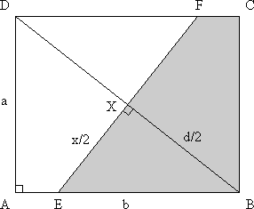
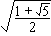

Solution to puzzle 1: Folded sheet of paper
We will find the length of the fold in terms of the dimensions of the sheet of paper, and set this equal to the length of the longer side.
Let the sheet of paper be ABCD, and have sides AD = a, AB = b, where a  b. Let the fold line be EF, of length x. Let d the length of the diagonal.
b. Let the fold line be EF, of length x. Let d the length of the diagonal.
By Pythagoras' Theorem, d2 = a2 + b2.
Draw straight line BD between the two corners used to make the fold. It's clear by symmetry that this diagonal intersects the fold at right angles. Further, also by symmetry, both lines meet at the center of the rectangle, X, and bisect each other.
Triangles DAB and XEB contain two common angles, and therefore are similar.
Hence a/b = (x/2)/(d/2) = x/d.
Therefore x = (a/b) (a2 + b2).
(a2 + b2).
If x = b, as we require, then a2(a2 + b2) = b4, and so b4 - a2b2 - a4 = 0.
| Solving as a quadratic equation in b2, we have b2 | = [a2 ± |
| = a2 (1 ± )/2. |
Rejecting the negative roots, b/a = ratio of longer side to shorter side = 
Source: Message 4411, Problem 10, on Math for Fun Yahoo! Group